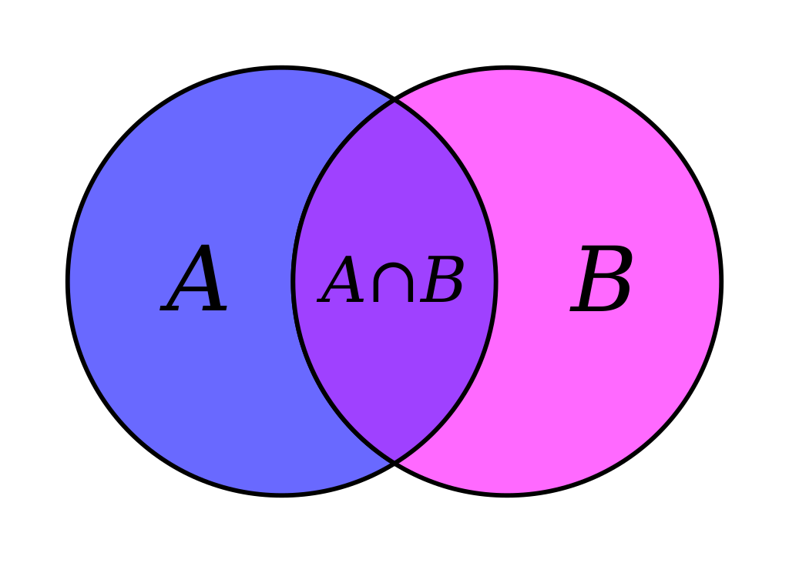

Set theory is branch of mathematical logic studies sets , which can be informally described as collections of objects. Although objects of any kind can be collected into a set, set theory, as a branch of mathematics, is mostly concerned with those that are relevant to mathematics as a whole.
The modern study of set theory was initiated by the German mathematicians Richard Dedekind and Georg Cantor in the 1870s. In particular, Georg Cantor is commonly considered the founder of set theory. The non-formalized systems investigated during this early stage go under the name of naive set theory. After the discovery of paradoxes within naive set theory (such as Russell's paradox, Cantor's paradox and the Burali-Forti paradox), various axiomatic systems were proposed in the early twentieth century, of which Zermelo–Fraenkel set theory (with or without the axiom of choice) is still the best-known and most studied.